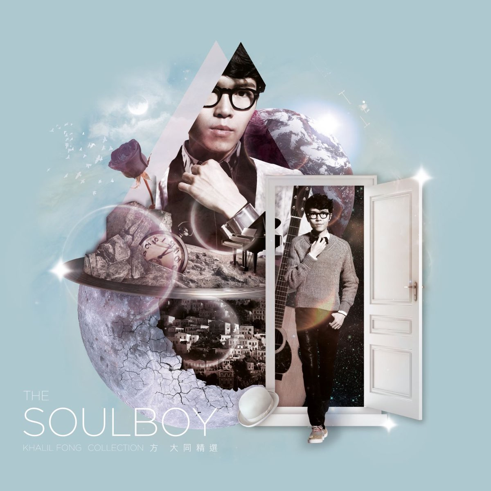
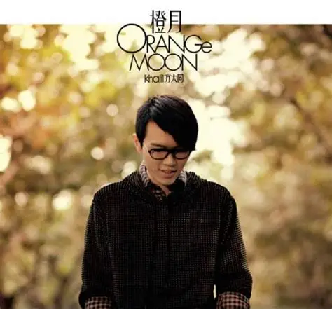
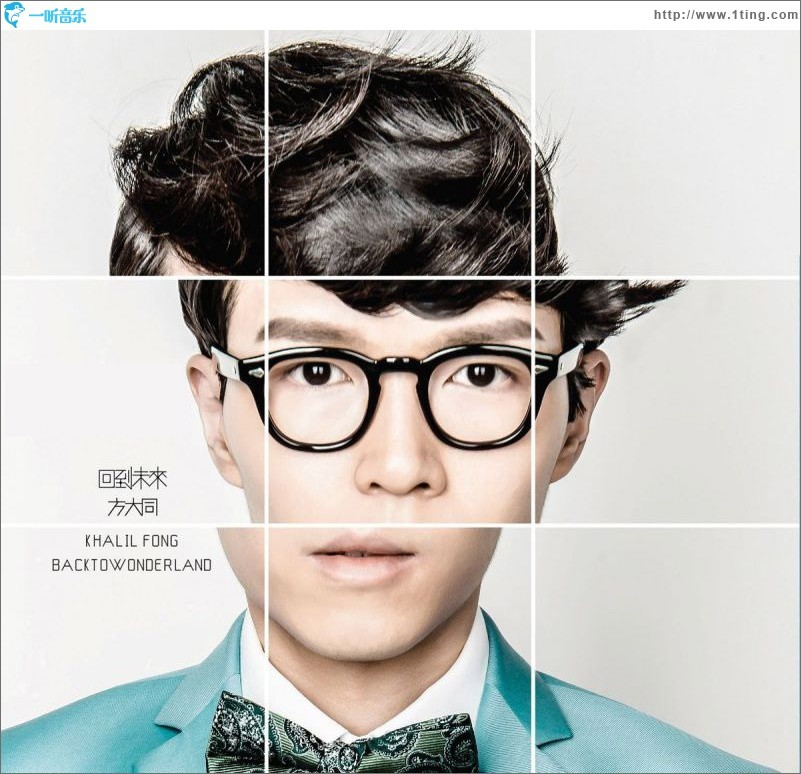

基本信息
| 本名 | 方大同 |
|---|---|
| 英文名 | Khalil Fong |
| 出生 | 1983年7月14日 |
| 出生地 | 美国夏威夷州 |
| 国籍 | 美国 |
| 职业 | 歌手、词曲作家、音乐制作人 |
| 音乐类型 | 灵魂乐、R&B、放克、爵士 |
| 特点 | 素食主义、精通多种乐器 |
代表作品
三人游
爱爱爱
好不容易
悟空
特别的人
音乐特点
- 精通吉他、钢琴、鼓等多种乐器
- 独特的灵魂乐唱腔
- 素食主义音乐理念
- 融合东西方音乐元素
音乐生涯
方大同是华语乐坛独树一帜的灵魂歌手，以其纯正的灵魂乐唱腔、精湛的乐器演奏和独特的音乐理念著称。
早年经历与音乐启蒙
方大同出生于美国夏威夷，成长于上海和广州，后定居香港。从小受福音音乐影响，6岁开始自学吉他，15岁自学钢琴和鼓。多元文化背景造就了他独特的音乐视野。
音乐风格与创新
方大同的音乐以纯正灵魂乐为基础，融合R&B、放克、爵士和摇滚元素。他的音乐既有西方音乐的精髓，又蕴含东方哲学的智慧，形成了独特的"方式灵魂乐"。
素食主义与音乐
方大同是严格的素食主义者，他认为素食不仅是一种生活方式，更是一种音乐创作理念，体现在他的音乐中就是对生命、自然和和平的尊重。
音乐风格解析
灵魂乐
纯正的灵魂乐唱腔，情感真挚深沉，被誉为"华语灵魂乐第一人"。
R&B
流畅的R&B旋律，复杂的和声进行，展现了深厚的音乐功底。
放克
强烈的节奏感，funky的吉他演奏，为音乐注入动感与活力。
爵士
复杂的爵士和声，即兴的演奏，展现了高超的音乐素养。
代表专辑

《Soulboy》
2005年 · 出道专辑
纯正灵魂乐在华语乐坛的首秀

《橙月》
2008年 · 突破之作
融合东西方音乐元素的成熟作品

《回到未来》
2012年 · 概念专辑
探索音乐与时间的哲学思考
音乐理念与哲学
方大同认为音乐的本质是情感的表达和心灵的交流。他的音乐不仅仅是旋律和节奏的组合，更是内心世界的投射和哲学思考的载体。
方大同的音乐成功融合了东西方音乐元素。他不仅精通西方灵魂乐、R&B，还将中国传统文化元素融入创作中，如歌曲《悟空》就是典型代表。
方大同将素食主义理念融入音乐创作中，他的音乐传达了对生命、自然和和平的尊重。这种理念体现在他的歌词、旋律乃至整个音乐创作过程中。